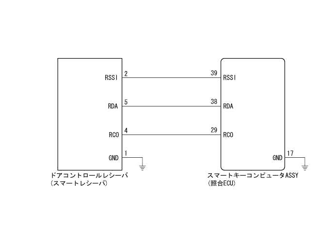
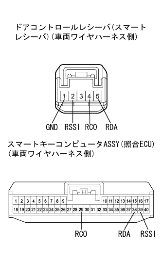

Smart Entry & Start System (Smart Entry) Smart Lock and Unlock Do Not Operate from Any Door (Wireless Function Also Does Not Operate) |

| Step 1 | Inspect Power Door Lock System |
Check that the door locks operate lock - unlock when the door control switch of the power window regulator master switch assembly is operated.
| Result | Proceed to |
|---|---|
| Operates normally | A |
| Does not operate normally | B |
|
| ||||
| A | |
| Step 2 | Inspect Electrical Key Transmitter Sub-assembly |
Check that the smart function operates normally when another electrical key transmitter registered to the vehicle is used.
| Result | Proceed to |
|---|---|
| Operates normally | A |
| Does not operate normally | B |
|
| ||||
| A | |
| Step 3 | Inspect Transmitter Battery (Voltage Inspection) |
Remove the transmitter battery from the electrical key transmitter (electronic key).
Using SST (Toyota electrical tester), measure the resistance of the transmitter battery.
| Tester Connection | Condition | Standard |
|---|---|---|
| Transmitter battery positive - Transmitter battery negative | Always | 2.1 to 3.2 V |
|
| ||||
| OK | ||
| ||
| Step 4 | Radio Wave Environment Check |
Perform wireless operation with the electrical key transmitter held close to the door control receiver, and check the operation.
| Result | Proceed to |
|---|---|
| Does not operate normally | A |
| Operates normally | B |
|
| ||||
| A | |
| Step 5 | Inspect Wire Harness and Connector (Door Control Receiver - Certification ECU) |
 |
Disconnect the door control receiver and certification ECU connectors.
Using SST (Toyota electrical tester), measure the resistance.
| Inspection terminal (receiver - certification ECU) | Condition | Standard |
|---|---|---|
| 2(RSSI) - 39(RSSI) | Always | Below 1 Ω |
| 5(RDA) - 38(RDA) | Always | Below 1 Ω |
| 4(RCO) - 29(RCO) | Always | Below 1 Ω |
| Inspection terminal (receiver - body ground) | Condition | Standard |
|---|---|---|
| 2 (RSSI) - Body ground | Always | 10K Ω or higher |
| 5 (RDA) - Body ground | Always | 10K Ω or higher |
| 4 (RCO) - Body ground | Always | 10K Ω or higher |
| 1 (GND) - Body ground | Always | Below 1 Ω |
| Inspection terminal (certification ECU - body ground) | Condition | Standard |
|---|---|---|
| 17 (GND) - Body ground | Always | Below 1 Ω |
|
| ||||
| OK | |
| Step 6 | Inspect Door Control Receiver |
Replace with a known good door control receiver and check that it operates normally.
| Result | Proceed to |
|---|---|
| Does not operate normally | A |
| Operates normally | B |
|
| ||||
| A | ||
| ||